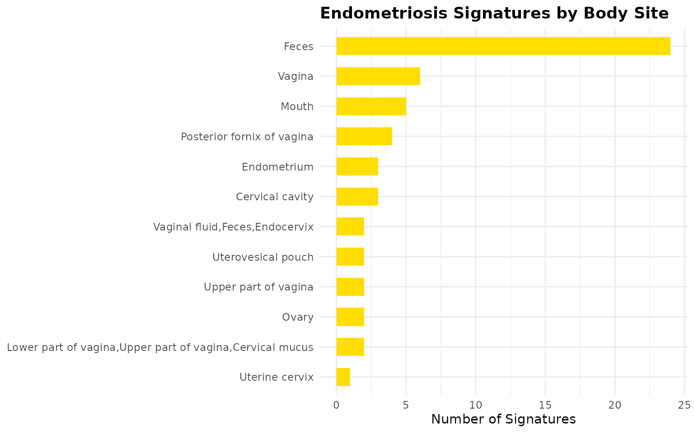
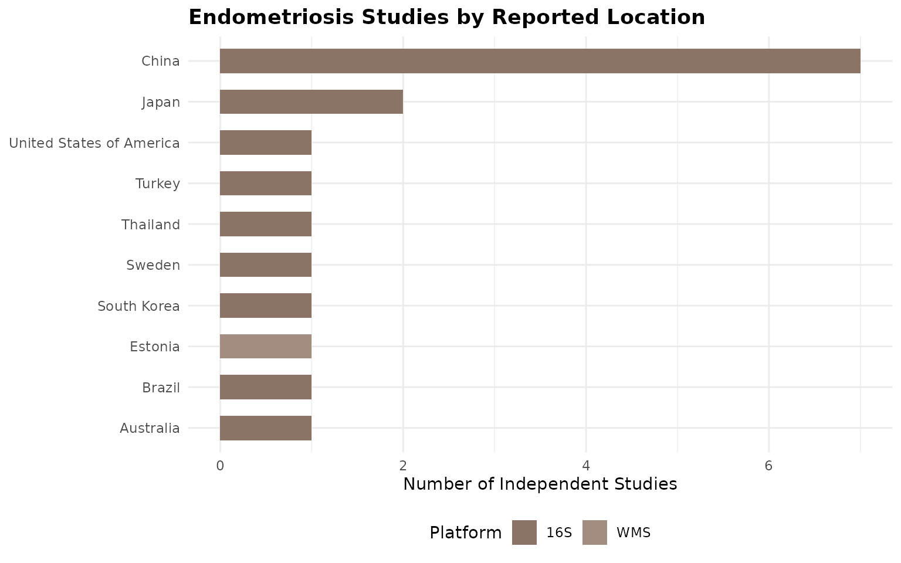
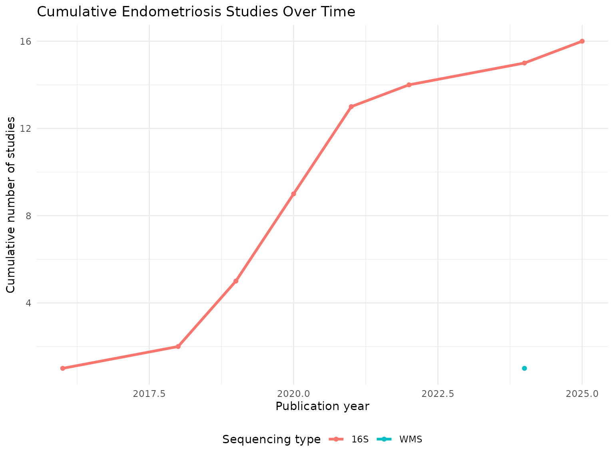
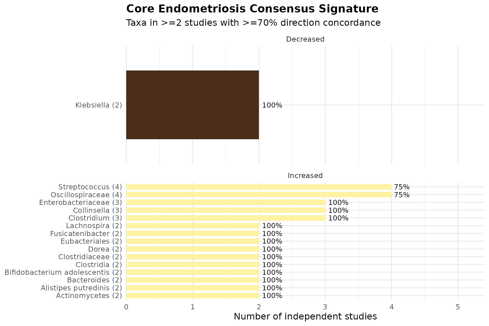
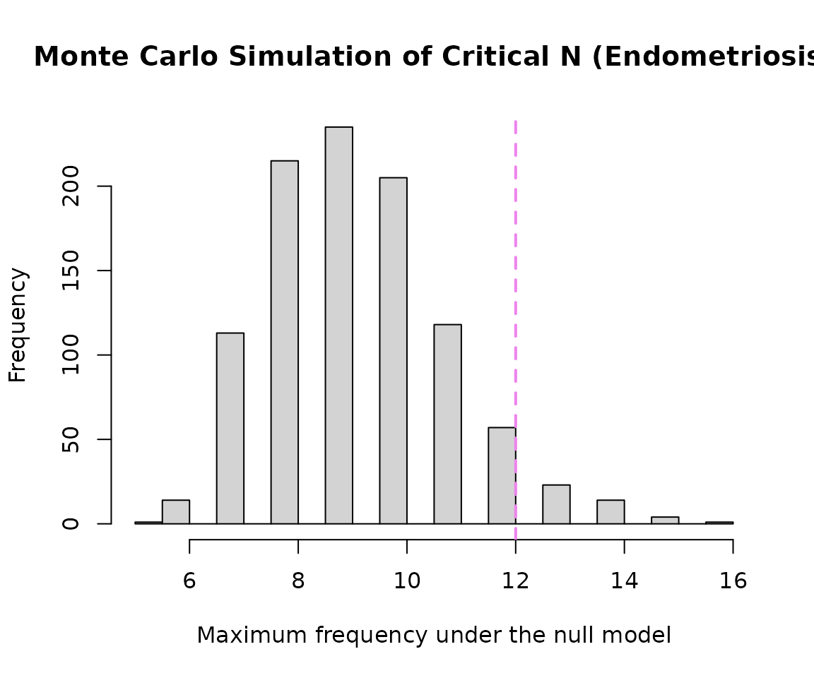
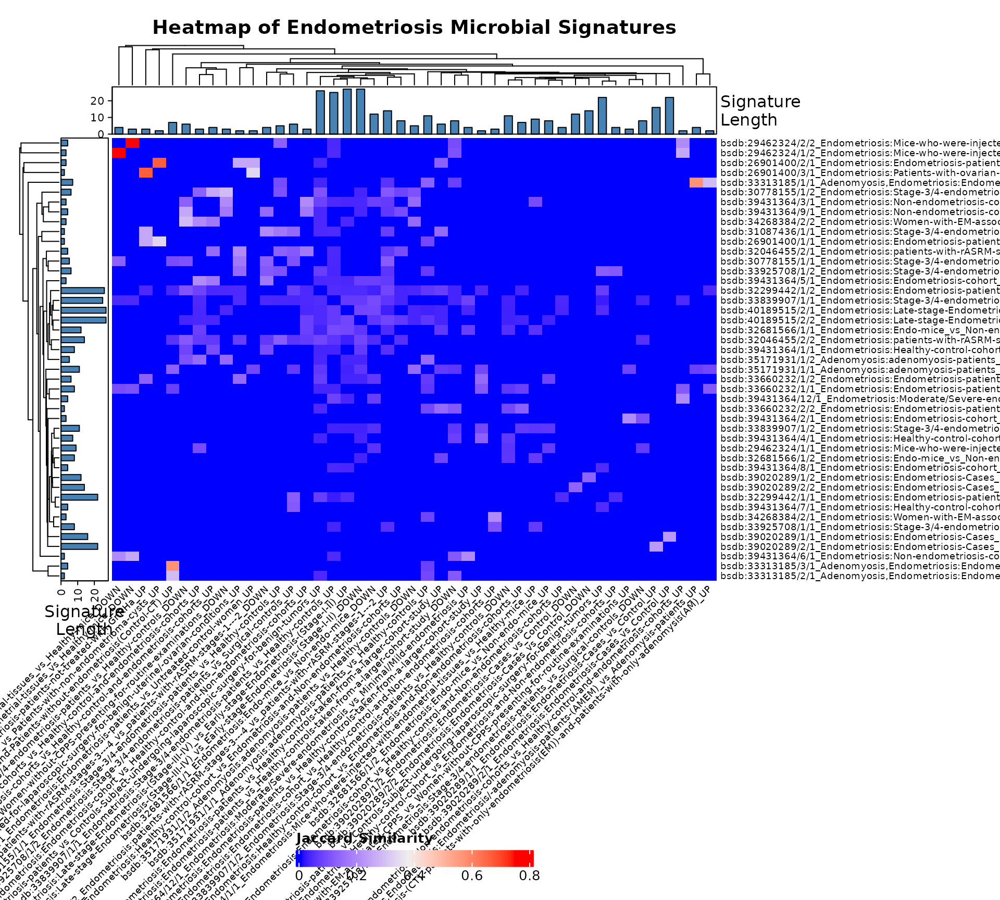

Focused Sub-Analysis of Endometriosis Microbial Signatures
Condition-Specific Analysis with Cross-Condition Mapping (BugSigDB)
Sally Karimi Kinyua
Source:vignettes/WomensHealth_Endometriosis_vignette.Rmd
WomensHealth_Endometriosis_vignette.RmdIntroduction
This vignette demonstrates a focused sub-analysis of microbial signatures associated specifically with endometriosis (and the closely related condition adenomyosis) using BugSigDB. This is the smallest of the four sub-analyses by sample size in the General Women’s Health dataset (42 signatures total across “Endometriosis”, “Adenomyosis”, and “Adenomyosis,Endometriosis”), so thresholds and statistical power should be interpreted with appropriate caution throughout.
Download and Prepare Data
full.dat <- bugsigdbr::importBugSigDB(cache = FALSE)Select Endometriosis-Specific Signatures
endometriosis_terms <- c(
"Endometriosis",
"Adenomyosis",
"Adenomyosis,Endometriosis"
)
endo_dat <- dat %>%
filter(Condition %in% endometriosis_terms) %>%
distinct()
nrow(endo_dat)## [1] 56| Condition | n |
|---|---|
| Endometriosis | 51 |
| Adenomyosis,Endometriosis | 3 |
| Adenomyosis | 2 |
Study Characteristics
| Body site | Sequencing type | n |
|---|---|---|
| Cervical cavity | 16S | 3 |
| Endometrium | 16S | 3 |
| Feces | 16S | 20 |
| Feces | WMS | 4 |
| Lower part of vagina,Upper part of vagina,Cervical mucus | 16S | 2 |
| Mouth | 16S | 5 |
| Ovary | 16S | 2 |
| Posterior fornix of vagina | 16S | 4 |
| Upper part of vagina | 16S | 2 |
| Uterine cervix | 16S | 1 |
| Uterovesical pouch | 16S | 2 |
| Vagina | 16S | 6 |
| Vaginal fluid,Feces,Endocervix | 16S | 2 |
| Year | n |
|---|---|
| 2016 | 5 |
| 2018 | 4 |
| 2019 | 4 |
| 2020 | 9 |
| 2021 | 12 |
| 2022 | 2 |
| 2024 | 18 |
| 2025 | 2 |
endo_dat %>%
count(`Body site`, sort = TRUE) %>%
ggplot(aes(x = reorder(`Body site`, n), y = n)) +
geom_col(fill = "#FFDE00", width = 0.6) +
coord_flip() +
labs(
title = "Endometriosis Signatures by Body Site",
x = NULL, y = "Number of Signatures"
) +
theme_minimal(base_size = 11) +
theme(plot.title = element_text(face = "bold"))
endo_dat %>%
distinct(PMID, `Location of subjects`, `Sequencing type`) %>%
filter(!is.na(`Location of subjects`)) %>%
count(`Location of subjects`, `Sequencing type`) %>%
ggplot(aes(x = reorder(`Location of subjects`, n), y = n, fill = `Sequencing type`)) +
geom_col(width = 0.6) +
coord_flip() +
# Adds your pastel dark brown palette manually
scale_fill_manual(values = c("#8B7365", "#A38D80", "#BCABA2")) +
labs(
title = "Endometriosis Studies by Reported Location",
x = NULL, y = "Number of Independent Studies", fill = "Platform"
) +
theme_minimal(base_size = 11) +
theme(plot.title = element_text(face = "bold"), legend.position = "bottom")
endo_dat %>%
distinct(PMID, Year, `Sequencing type`) %>%
filter(!is.na(Year)) %>%
count(Year, `Sequencing type`) %>%
group_by(`Sequencing type`) %>%
arrange(Year) %>%
mutate(cumulative_n = cumsum(n)) %>%
ungroup() %>%
ggplot(aes(x = Year, y = cumulative_n, color = `Sequencing type`)) +
geom_line(linewidth = 1.2) +
geom_point() +
labs(
title = "Cumulative Endometriosis Studies Over Time",
x = "Publication year", y = "Cumulative number of studies", color = "Sequencing type"
) +
theme_minimal(base_size = 11) +
theme(legend.position = "bottom")
Taxonomic Summary
taxa.table <- createTaxonTable(endo_dat)
knitr::kable(head(taxa.table, 20))| Taxon Name | Taxonomic Level | total_signatures | increased_signatures | decreased_signatures | Binomial Test pval |
|---|---|---|---|---|---|
| Lactobacillus | genus | 9 | 6 | 3 | 0.51 |
| Streptococcus | genus | 6 | 5 | 1 | 0.22 |
| Bacteroidales | order | 6 | 2 | 4 | 0.69 |
| Prevotella | genus | 6 | 4 | 2 | 0.69 |
| Coriobacteriaceae | family | 5 | 4 | 1 | 0.37 |
| Megasphaera | genus | 5 | 2 | 3 | 1.00 |
| Bacteroides | genus | 5 | 3 | 2 | 1.00 |
| Enterococcus | genus | 4 | 4 | 0 | 0.12 |
| Oscillospira | genus | 4 | 4 | 0 | 0.12 |
| Blautia | genus | 4 | 3 | 1 | 0.63 |
Split by Sequencing Type
endo.wms <- endo_dat %>% filter(`Sequencing type` == "WMS")
endo.16s <- endo_dat %>% filter(`Sequencing type` == "16S")
cat("WMS - signatures:", nrow(endo.wms), "| studies:", n_distinct(endo.wms$PMID), "\n")## WMS - signatures: 4 | studies: 1
cat("16S - signatures:", nrow(endo.16s), "| studies:", n_distinct(endo.16s$PMID), "\n")## 16S - signatures: 52 | studies: 16Long-Format Taxon Table
sigs.endo <- bugsigdbr::getSignatures(endo_dat, tax.id.type = "taxname")
sigs.all <- bugsigdbr::getSignatures(dat, tax.id.type = "taxname")
taxon.long <- purrr::map_dfr(seq_along(sigs.all), function(i) {
taxa <- sigs.all[[i]]
if (length(taxa) == 0) return(NULL)
tibble::tibble(sig_id = i, taxon = taxa)
}) %>%
left_join(
dat %>%
mutate(sig_id = row_number()) %>%
select(sig_id, PMID, Condition, `Sequencing type`, `Abundance in Group 1`),
by = "sig_id"
) %>%
rename(direction = `Abundance in Group 1`)
nrow(taxon.long)## [1] 58971Taxon Frequency Across Studies
taxon.freq <- taxon.long %>%
filter(Condition %in% endometriosis_terms) %>%
distinct(PMID, taxon, direction) %>%
count(taxon, direction, name = "n_studies") %>%
group_by(taxon) %>%
mutate(total_studies = sum(n_studies)) %>%
ungroup() %>%
arrange(desc(total_studies))
n_distinct(taxon.freq$taxon)## [1] 253
taxon.freq %>%
distinct(taxon, total_studies) %>%
slice_max(total_studies, n = 15) %>%
knitr::kable()| taxon | total_studies |
|---|---|
| Oscillospiraceae | 5 |
| Lactobacillus | 4 |
| Streptococcus | 4 |
| Bacteroides | 3 |
| Bifidobacterium | 3 |
| Clostridium | 3 |
| Collinsella | 3 |
| Enterobacteriaceae | 3 |
| Faecalibacterium | 3 |
| Fusicatenibacter | 3 |
| Lachnospiraceae | 3 |
| Lactobacillaceae | 3 |
| Mycobacteriales | 3 |
| Actinomycetes | 2 |
| Actinomycetota | 2 |
| Alistipes putredinis | 2 |
| Bacillota | 2 |
| Bacteroides thetaiotaomicron | 2 |
| Bifidobacterium adolescentis | 2 |
| Bilophila wadsworthia | 2 |
| Blautia | 2 |
| Burkholderiales | 2 |
| Clostridia | 2 |
| Clostridiaceae | 2 |
| Dorea | 2 |
| Eggerthella lenta | 2 |
| Enterobacter | 2 |
| Enterocloster bolteae | 2 |
| Enterocloster clostridioformis | 2 |
| Enterococcus | 2 |
| Eubacteriales | 2 |
| Flavonifractor plautii | 2 |
| Gemmiger | 2 |
| Klebsiella | 2 |
| Lachnospira | 2 |
| Lawsonella | 2 |
| Moryella | 2 |
| Peptoniphilus | 2 |
| Peptostreptococcus | 2 |
| Pseudomonadota | 2 |
| Roseburia | 2 |
| Rothia | 2 |
| Ruminiclostridium | 2 |
| Serratia | 2 |
| Staphylococcaceae | 2 |
| Subdoligranulum | 2 |
| [Clostridium] scindens | 2 |
Core Consensus Signature
concordance <- taxon.long %>%
filter(Condition %in% endometriosis_terms) %>%
distinct(PMID, taxon, direction) %>%
group_by(taxon) %>%
summarise(
n_studies = n_distinct(PMID),
n_increased = sum(direction == "increased"),
n_decreased = sum(direction == "decreased"),
concordance_pct = round(max(n_increased, n_decreased) / n_studies * 100, 1),
majority_dir = if_else(n_increased >= n_decreased, "increased", "decreased"),
.groups = "drop"
) %>%
arrange(desc(n_studies), desc(concordance_pct))
# Given the small sample size (42 signatures total), the standard >=3/>=75% threshold
# may return very few or zero rows. Loosen to >=2 studies / >=70% concordance if so
# (matching the Cervical Cancer approach), and state that explicitly below.
core.sig <- concordance %>%
filter(n_studies >= 2, concordance_pct >= 70) %>%
arrange(majority_dir, desc(n_studies))
nrow(core.sig)## [1] 22
knitr::kable(core.sig)| taxon | n_studies | n_increased | n_decreased | concordance_pct | majority_dir |
|---|---|---|---|---|---|
| Klebsiella | 2 | 0 | 2 | 100 | decreased |
| Oscillospiraceae | 4 | 3 | 2 | 75 | increased |
| Streptococcus | 4 | 3 | 1 | 75 | increased |
| Clostridium | 3 | 3 | 0 | 100 | increased |
| Collinsella | 3 | 3 | 0 | 100 | increased |
| Enterobacteriaceae | 3 | 3 | 0 | 100 | increased |
| Actinomycetes | 2 | 2 | 0 | 100 | increased |
| Alistipes putredinis | 2 | 2 | 0 | 100 | increased |
| Bacteroides | 2 | 2 | 1 | 100 | increased |
| Bifidobacterium adolescentis | 2 | 2 | 0 | 100 | increased |
| Clostridia | 2 | 2 | 0 | 100 | increased |
| Clostridiaceae | 2 | 2 | 0 | 100 | increased |
| Dorea | 2 | 2 | 0 | 100 | increased |
| Eubacteriales | 2 | 2 | 0 | 100 | increased |
| Fusicatenibacter | 2 | 2 | 1 | 100 | increased |
| Lachnospira | 2 | 2 | 0 | 100 | increased |
| Lachnospiraceae | 2 | 2 | 1 | 100 | increased |
| Moryella | 2 | 2 | 0 | 100 | increased |
| Mycobacteriales | 2 | 2 | 1 | 100 | increased |
| Peptostreptococcus | 2 | 2 | 0 | 100 | increased |
| Pseudomonadota | 2 | 2 | 0 | 100 | increased |
| Roseburia | 2 | 2 | 0 | 100 | increased |
Core Signature Visualisation
if (nrow(core.sig) > 0) {
core.sig %>%
group_by(majority_dir) %>%
slice_max(n_studies, n = 15, with_ties = FALSE) %>%
ungroup() %>%
mutate(
direction_label = if_else(majority_dir == "increased", "Increased", "Decreased"),
taxon_label = paste0(str_wrap(taxon, width = 28), " (", n_studies, ")")
) %>%
ggplot(aes(x = reorder(taxon_label, n_studies), y = n_studies, fill = direction_label)) +
geom_col(width = 0.7) +
geom_text(aes(label = paste0(concordance_pct, "%")), hjust = -0.15, size = 3.3) +
coord_flip(clip = "off") +
facet_wrap(~direction_label, scales = "free_y", ncol = 1) +
scale_fill_manual(values = c("Increased" = "#FFF2A3", "Decreased" = "#4A2E1B")) +
scale_y_continuous(expand = expansion(mult = c(0, 0.35))) +
labs(
title = "Core Endometriosis Consensus Signature",
subtitle = "Taxa in >=2 studies with >=70% direction concordance",
x = NULL, y = "Number of independent studies", fill = NULL
) +
theme_minimal(base_size = 12) +
theme(legend.position = "none", plot.title = element_text(face = "bold"))
} else {
cat("No taxa met the core-signature threshold at this sample size.")
}
Taxon Enrichment Analysis
n.universe <- n_distinct(taxon.long %>% filter(Condition %in% endometriosis_terms) %>% pull(taxon))
n.sigs <- length(sigs.endo)
enrichment.df <- taxon.freq %>%
distinct(taxon, total_studies) %>%
mutate(
observed = total_studies,
expected = n.sigs / n.universe,
enrichment_ratio = observed / expected,
log2_enrichment = log2(enrichment_ratio),
p_value = purrr::map_dbl(observed, ~ binom.test(
x = .x, n = n.sigs, p = 1 / n.universe, alternative = "greater"
)$p.value),
p_adj = p.adjust(p_value, method = "BH")
) %>%
arrange(p_adj, desc(log2_enrichment))
sum(enrichment.df$p_adj < 0.05)## [1] 13| taxon | total_studies | observed | expected | enrichment_ratio | log2_enrichment | p_value | p_adj |
|---|---|---|---|---|---|---|---|
| Oscillospiraceae | 5 | 5 | 0.2213439 | 22.589286 | 4.497567 | 0.0000031 | 0.0007882 |
| Lactobacillus | 4 | 4 | 0.2213439 | 18.071429 | 4.175639 | 0.0000761 | 0.0064158 |
| Streptococcus | 4 | 4 | 0.2213439 | 18.071429 | 4.175639 | 0.0000761 | 0.0064158 |
| Bacteroides | 3 | 3 | 0.2213439 | 13.553571 | 3.760601 | 0.0014637 | 0.0284859 |
| Bifidobacterium | 3 | 3 | 0.2213439 | 13.553571 | 3.760601 | 0.0014637 | 0.0284859 |
| Clostridium | 3 | 3 | 0.2213439 | 13.553571 | 3.760601 | 0.0014637 | 0.0284859 |
| Collinsella | 3 | 3 | 0.2213439 | 13.553571 | 3.760601 | 0.0014637 | 0.0284859 |
| Enterobacteriaceae | 3 | 3 | 0.2213439 | 13.553571 | 3.760601 | 0.0014637 | 0.0284859 |
| Faecalibacterium | 3 | 3 | 0.2213439 | 13.553571 | 3.760601 | 0.0014637 | 0.0284859 |
| Fusicatenibacter | 3 | 3 | 0.2213439 | 13.553571 | 3.760601 | 0.0014637 | 0.0284859 |
| Lachnospiraceae | 3 | 3 | 0.2213439 | 13.553571 | 3.760601 | 0.0014637 | 0.0284859 |
| Lactobacillaceae | 3 | 3 | 0.2213439 | 13.553571 | 3.760601 | 0.0014637 | 0.0284859 |
| Mycobacteriales | 3 | 3 | 0.2213439 | 13.553571 | 3.760601 | 0.0014637 | 0.0284859 |
| Actinomycetes | 2 | 2 | 0.2213439 | 9.035714 | 3.175639 | 0.0208905 | 0.1124530 |
| Actinomycetota | 2 | 2 | 0.2213439 | 9.035714 | 3.175639 | 0.0208905 | 0.1124530 |
Monte Carlo Critical N
siglengths <- lengths(endo_dat$`MetaPhlAn taxon names`)
criticalN <- getCriticalN(
relevant.sigs = endo_dat$`MetaPhlAn taxon names`,
siglengths = siglengths
)
criticalN## $critical_n
## 95%
## 12
##
## $ci_lower
## 2.5%
## 12
##
## $ci_upper
## 97.5%
## 13
##
## $simulated_values
## [1] 11 9 10 10 7 10 9 10 7 8 10 9 8 9 9 7 9 14 11 10 9 10 7 13
## [25] 8 9 10 10 9 12 11 11 6 8 10 10 8 9 9 10 10 8 11 7 9 11 8 9
## [49] 12 12 11 8 10 9 11 10 9 8 8 11 7 14 9 9 9 9 8 9 8 10 8 15
## [73] 9 11 10 11 10 11 6 10 8 9 8 9 6 10 9 9 10 10 10 9 12 10 13 7
## [97] 10 8 9 14 8 9 10 8 10 9 11 10 12 7 8 8 8 9 12 10 9 8 10 9
## [121] 11 7 7 8 6 8 12 7 9 8 9 9 8 12 9 8 9 8 7 9 9 9 10 10
## [145] 10 8 7 7 8 7 9 11 11 8 14 8 8 9 10 8 7 7 8 8 8 7 8 8
## [169] 8 12 8 12 11 9 8 9 10 9 9 8 8 8 10 8 9 13 11 11 8 8 11 10
## [193] 10 7 8 11 11 7 9 12 11 7 7 8 11 10 10 9 9 8 9 10 8 10 8 8
## [217] 9 11 8 8 8 8 11 8 8 11 10 11 9 8 10 9 8 10 9 9 9 9 10 7
## [241] 12 9 8 11 7 8 7 10 13 10 9 11 7 8 7 11 8 8 11 13 10 10 9 10
## [265] 8 7 8 10 10 9 10 10 11 8 10 9 11 10 7 15 11 7 15 7 7 10 11 10
## [289] 8 7 8 9 10 9 8 10 9 12 9 9 10 9 11 11 8 10 7 9 11 8 11 10
## [313] 9 10 7 8 9 14 10 14 9 10 8 10 8 9 9 8 11 12 8 9 6 7 8 7
## [337] 8 10 12 10 11 11 9 8 9 7 9 8 9 9 8 10 9 9 10 7 11 8 10 11
## [361] 8 8 8 10 9 10 11 10 10 12 10 12 9 12 11 11 7 9 8 9 9 9 9 8
## [385] 7 12 8 10 10 9 10 10 11 11 8 11 7 9 10 8 12 10 9 10 11 7 9 9
## [409] 10 8 10 12 8 7 11 9 9 9 10 9 8 8 11 7 10 7 9 9 10 8 10 14
## [433] 9 10 10 10 13 10 11 9 10 10 9 8 10 11 13 10 13 12 9 10 7 7 10 11
## [457] 10 9 8 8 7 10 11 9 10 9 11 10 9 10 8 9 9 11 9 7 10 9 9 10
## [481] 11 9 7 10 8 8 11 12 10 8 9 9 11 9 10 10 8 7 9 10 11 8 8 10
## [505] 7 10 12 8 12 9 12 9 11 10 9 9 10 8 8 7 12 8 8 12 10 10 12 8
## [529] 8 12 8 10 10 7 9 11 9 7 7 9 9 7 5 10 12 7 10 11 8 9 12 8
## [553] 10 10 12 8 7 7 8 10 8 10 11 12 10 7 10 7 12 10 10 9 9 9 12 11
## [577] 7 10 10 9 11 10 9 10 13 11 10 6 11 8 11 11 9 13 14 7 8 8 11 11
## [601] 9 7 11 9 10 8 14 12 11 8 7 7 7 8 10 8 11 7 10 10 11 11 11 10
## [625] 8 12 9 11 9 8 10 13 10 8 9 8 11 12 9 10 8 11 12 7 7 9 8 7
## [649] 10 7 9 7 7 11 8 11 8 8 8 8 6 11 9 10 9 9 8 8 9 7 10 9
## [673] 8 10 8 9 13 10 9 10 8 6 7 8 14 7 9 13 7 9 10 8 8 10 11 7
## [697] 10 9 10 11 8 7 11 8 9 8 12 8 7 8 10 9 10 9 13 9 9 9 8 8
## [721] 13 9 11 12 8 9 8 10 10 8 11 12 8 7 12 8 9 9 13 9 8 10 9 9
## [745] 11 11 8 12 10 8 10 9 8 11 10 10 8 10 10 6 7 9 12 12 9 8 7 13
## [769] 9 13 10 8 9 9 12 9 7 6 9 8 9 10 8 13 11 8 9 10 13 9 8 8
## [793] 9 9 10 11 9 9 10 8 13 8 9 8 8 9 9 8 7 9 9 9 7 8 13 9
## [817] 10 14 10 10 8 9 9 7 10 8 10 8 10 8 10 9 8 7 11 8 7 11 7 8
## [841] 11 7 11 9 9 11 9 8 9 9 6 9 9 8 7 8 12 12 8 9 7 10 8 9
## [865] 9 10 7 8 8 10 12 11 7 8 9 7 9 9 12 9 8 10 8 9 9 12 8 11
## [889] 8 9 11 8 10 8 7 11 10 7 14 8 14 10 7 10 8 10 10 9 7 9 11 9
## [913] 9 9 9 9 11 10 12 8 9 10 9 7 8 10 11 8 9 7 10 7 8 10 10 12
## [937] 7 9 14 9 9 10 8 8 9 15 10 11 6 10 11 9 12 7 11 8 9 9 9 10
## [961] 9 9 9 10 10 10 13 12 8 8 8 9 7 16 10 9 11 9 11 9 11 7 11 9
## [985] 8 7 7 10 10 6 10 11 8 6 9 9 8 7 8 10
##
## $alpha
## [1] 0.05
##
## $quantile_label
## [1] "95th percentile"
hist(
criticalN$simulated_values,
breaks = 30,
main = "Monte Carlo Simulation of Critical N (Endometriosis)",
xlab = "Maximum frequency under the null model"
)
abline(v = criticalN$critical_n, col = "violet", lwd = 2, lty = 2)
Cross-Condition Taxa Overlap Analysis
endo_taxa <- taxon.long %>%
filter(Condition %in% endometriosis_terms) %>%
distinct(taxon) %>%
pull(taxon)
shared_taxa_counts <- taxon.long %>%
filter(taxon %in% endo_taxa) %>%
group_by(taxon) %>%
summarise(
total_womens_health_studies = n_distinct(PMID),
distinct_conditions_linked = n_distinct(Condition),
top_other_conditions = paste(
head(setdiff(unique(Condition), endometriosis_terms), 3),
collapse = ", "
),
.groups = "drop"
) %>%
arrange(desc(distinct_conditions_linked))
shared_taxa_counts %>%
slice_max(distinct_conditions_linked, n = 20, with_ties = FALSE) %>%
knitr::kable(
caption = "Top Endometriosis-Associated Taxa and Their Links to Other Conditions",
col.names = c("Taxon Name", "Total WH Studies", "Total Distinct Conditions", "Other Conditions it Often Appears In")
)| Taxon Name | Total WH Studies | Total Distinct Conditions | Other Conditions it Often Appears In |
|---|---|---|---|
| Streptococcus | 347 | 214 | Granulomatosis with Polyangiitis, Diet, Autism |
| Prevotella | 354 | 211 | Illness severity status, Antimicrobial agent, Obesity |
| Lactobacillus | 335 | 201 | Antimicrobial agent, Oxygen, Illness severity status |
| Bacteroides | 345 | 199 | Autism, Autoimmune disease, Obesity |
| Lachnospiraceae | 331 | 199 | Autoimmune disease, Smoking behavior, Irritable bowel syndrome |
| Bacillota | 313 | 190 | Type II diabetes mellitus, Autism, Autoimmune disease |
| Faecalibacterium | 278 | 183 | Obesity, Autoimmune disease, Irritable bowel syndrome |
| Oscillospiraceae | 273 | 183 | Autoimmune disease, Smoking behavior, Colorectal carcinoma |
| Bifidobacterium | 275 | 177 | Food allergy, Irritable bowel syndrome, Autism |
| Clostridium | 258 | 175 | Irritable bowel syndrome, Autism, Autoimmune disease |
| Actinomycetota | 265 | 171 | Autism, Ethnic group,Place of residence measurement, Ulcerative colitis |
| Pseudomonadota | 241 | 166 | Autism, Autoimmune disease, Ethnic group,Place of residence measurement |
| Roseburia | 228 | 165 | Autoimmune disease, Smoking behavior, Irritable bowel syndrome |
| Blautia | 246 | 164 | Autoimmune disease, Irritable bowel syndrome, Colorectal cancer |
| Veillonella | 241 | 161 | Obesity, Antimicrobial agent, Oxygen |
| Bacteroidota | 247 | 158 | Autism, Autoimmune disease, Irritable bowel syndrome |
| Eubacteriales | 219 | 156 | Autoimmune disease, Colorectal carcinoma, Psoriasis |
| Enterobacteriaceae | 213 | 155 | Autoimmune disease, Irritable bowel syndrome, Sampling site |
| Haemophilus | 208 | 153 | Illness severity status, Diet, Autoimmune disease |
| Clostridia | 188 | 140 | Type II diabetes mellitus, Autoimmune disease, Colorectal carcinoma |
Signature Similarity and Heatmap
allsigs <- bugsigdbr::getSignatures(endo_dat, tax.id.type = "taxname")
allsigs <- allsigs[sapply(allsigs, length) > 1]
if (length(allsigs) > 1) {
jmat <- BugSigDBStats::calcJaccardSimilarity(allsigs)
siglengths <- sapply(allsigs, length)
ha <- HeatmapAnnotation(
`Signature\nLength` = anno_barplot(siglengths, gp = gpar(fill = "#4682B4"), height = unit(1.2, "cm"))
)
hr <- rowAnnotation(
`Signature\nLength` = anno_barplot(siglengths, gp = gpar(fill = "#4682B4"), width = unit(1.2, "cm"))
)
hm <- Heatmap(
jmat,
top_annotation = ha,
left_annotation = hr,
row_names_gp = gpar(fontsize = 7),
column_names_gp = gpar(fontsize = 7),
column_names_rot = 45,
column_title = "Heatmap of Endometriosis Microbial Signatures",
column_title_gp = gpar(fontsize = 14, fontface = "bold"),
heatmap_legend_param = list(title = "Jaccard Similarity", direction = "horizontal", legend_width = unit(6, "cm"))
)
draw(hm, heatmap_legend_side = "bottom", padding = unit(c(5, 5, 5, 10), "mm"))
png(filename = "Endometriosis_heatmap.png", width = 10, height = 9, units = "in", res = 300)
draw(hm, heatmap_legend_side = "bottom", padding = unit(c(5, 5, 5, 10), "mm"))
dev.off()
} else {
cat("Fewer than 2 multi-taxon signatures available - heatmap not generated.")
}
## agg_png
## 2Note: with only 42 total signatures for this sub-analysis, the
heatmap is small enough that row/column labels are kept visible (unlike
General/Breast Cancer, which had to hide labels given hundreds of
signatures) - adjust
row_names_gp/column_names_gp font size further
if labels still overlap once you see the actual output.